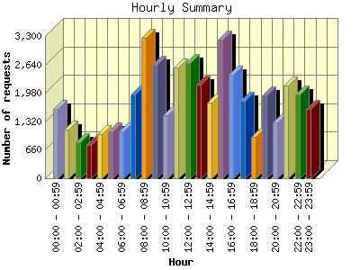
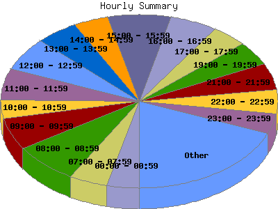

Report generated by Analog 6.0 and Report Magic 2.21
|
Web Server Statistics for "Harish Narayanan (hnarayan) - February 2008" Report generated by Analog 6.0 and Report Magic 2.21 |
The Hourly Summary identifies the level of activity broken down by each hour. Remember that one page hit can result in several server requests as the images for each page are loaded. This summary also compares the level of activity during working hours and after hours as a total for the report time frame.


| Hour | Number of requests | Number of bytes transferred | Percentage of the bytes | Percentage of the requests | |
|---|---|---|---|---|---|
| 1. | 00:00 - 00:59 | 1,608 | 80.561 MB | 4.12% | 3.71% |
| 2. | 01:00 - 01:59 | 1,133 | 28.721 MB | 1.47% | 2.62% |
| 3. | 02:00 - 02:59 | 830 | 42.702 MB | 2.18% | 1.92% |
| 4. | 03:00 - 03:59 | 776 | 37.661 MB | 1.93% | 1.79% |
| 5. | 04:00 - 04:59 | 1,017 | 60.487 MB | 3.09% | 2.35% |
| 6. | 05:00 - 05:59 | 1,087 | 58.326 MB | 2.98% | 2.51% |
| 7. | 06:00 - 06:59 | 1,095 | 50.522 MB | 2.58% | 2.53% |
| 8. | 07:00 - 07:59 | 1,950 | 75.040 MB | 3.84% | 4.50% |
| 9. | 08:00 - 08:59 | 3,257 | 101.287 MB | 5.18% | 7.52% |
| 10. | 09:00 - 09:59 | 2,624 | 101.817 MB | 5.21% | 6.06% |
| 11. | 10:00 - 10:59 | 1,466 | 44.146 MB | 2.26% | 3.38% |
| 12. | 11:00 - 11:59 | 2,573 | 172.624 MB | 8.83% | 5.94% |
| 13. | 12:00 - 12:59 | 2,670 | 117.256 MB | 6.00% | 6.16% |
| 14. | 13:00 - 13:59 | 2,166 | 99.724 MB | 5.10% | 5.00% |
| 15. | 14:00 - 14:59 | 1,759 | 78.645 MB | 4.02% | 4.06% |
| 16. | 15:00 - 15:59 | 3,208 | 100.353 MB | 5.13% | 7.41% |
| 17. | 16:00 - 16:59 | 2,411 | 74.632 MB | 3.82% | 5.57% |
| 18. | 17:00 - 17:59 | 1,805 | 107.039 MB | 5.47% | 4.17% |
| 19. | 18:00 - 18:59 | 963 | 75.439 MB | 3.86% | 2.22% |
| 20. | 19:00 - 19:59 | 1,929 | 68.830 MB | 3.52% | 4.45% |
| 21. | 20:00 - 20:59 | 1,286 | 60.687 MB | 3.10% | 2.97% |
| 22. | 21:00 - 21:59 | 2,149 | 98.638 MB | 5.04% | 4.96% |
| 23. | 22:00 - 22:59 | 1,948 | 64.476 MB | 3.30% | 4.50% |
| 24. | 23:00 - 23:59 | 1,614 | 155.508 MB | 7.95% | 3.73% |
| Work Hours (8:00am-4:59pm) | 22,134 | 890.485 MB | 45.55% | 51.09% | |
| After Hours (5:00pm-7:59am) | 21,190 | 1.040 GB | 54.45% | 48.91% | |
This report was generated on March 24, 2008 12:00.
Report time frame February 1, 2008 00:29 to February 29, 2008 23:24.
| Web statistics report produced by: | |
 Analog 6.0 Analog 6.0 |  Report Magic 2.21 Report Magic 2.21 |